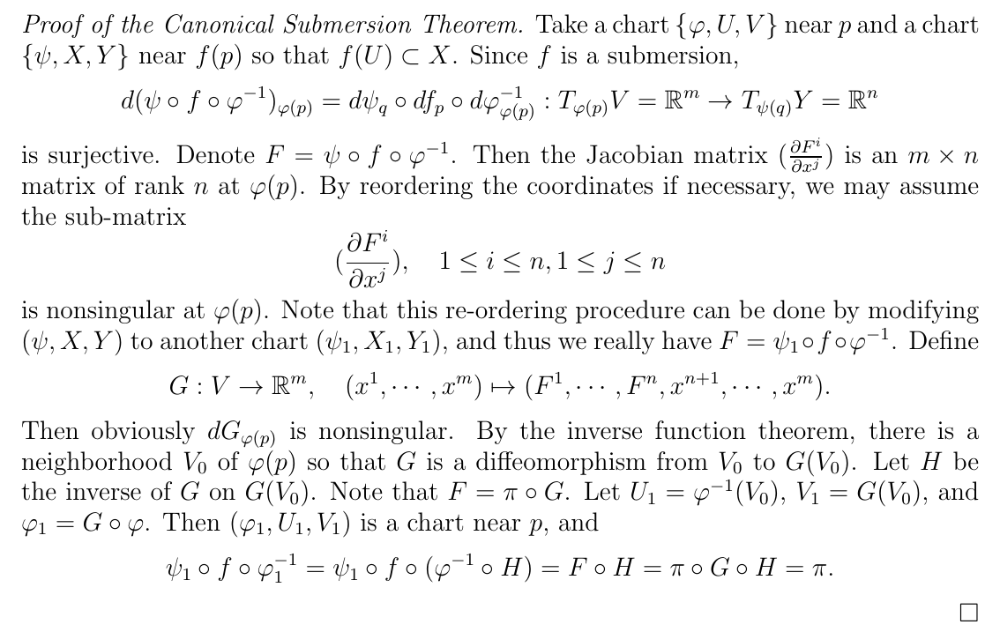

Let $f:M \rightarrow N$ be a submersion at $p\in M$, then $m=\operatorname{dim} M \geq n=\operatorname{dim} N$ and there exist charts $\left(\varphi_{1}, U_{1}, V_{1}\right)$ around $p$ and $\left(\psi_{1}, X_{1}, Y_{1}\right)$ around $f(p)$ such that
$$ \psi_{1} \circ f \circ \varphi_{1}^{-1}=\left.\pi\right|_{V_{1}}. $$REMARK: As can be deduced from the following proof, a submersion gives to $M$ the structure of a product around $p$ since we can construct a diffeomorphism
$$ t_p:p\in U_2 \longrightarrow f(U_2) \times I_p^{m-n} $$being $I_p\subseteq \mathbb{R}$ an interval depending on $p$.

In some sense this is "dual" to the canonical immersion theorem.
The proof use the inverse function theorem.
________________________________________
________________________________________
________________________________________
Author of the notes: Antonio J. Pan-Collantes
INDEX: